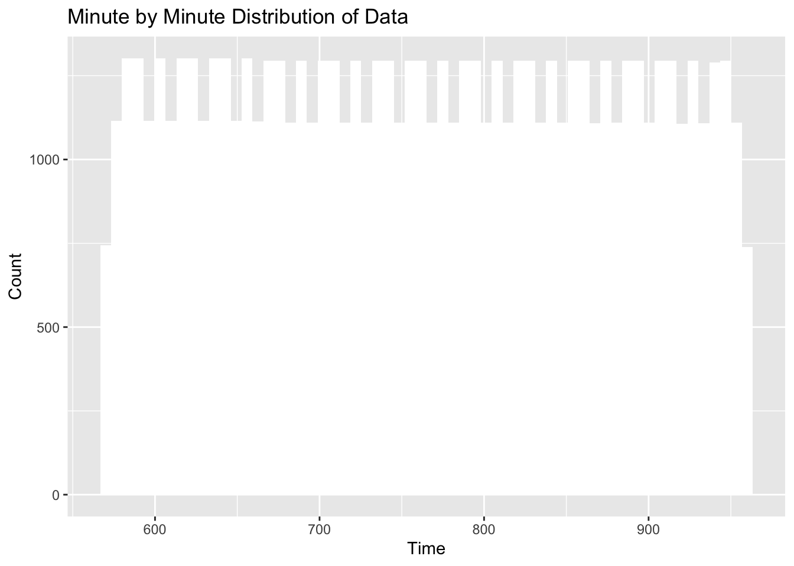

library(dplyr)
library(ggplot2)
library(lubridate)
library(quantmod)FVG Setup
Downloading data
The data is taken from the alpaca library using python. It is saved as a csv file and is ready to be loaded in.
stock_data = read.csv("stock_data_2025.csv")EDA
Glimpse at the structure and basic information about the dataset
glimpse(stock_data)Rows: 154,946
Columns: 9
$ symbol <chr> "SPY", "SPY", "SPY", "SPY", "SPY", "SPY", "SPY", "SPY", "S…
$ timestamp <chr> "2025-01-02 04:00:00-05:00", "2025-01-02 04:01:00-05:00", …
$ open <dbl> 588.22, 589.10, 589.03, 588.90, 589.00, 589.00, 589.27, 58…
$ high <dbl> 589.07, 589.25, 589.03, 588.90, 589.00, 589.04, 589.27, 58…
$ low <dbl> 588.12, 589.10, 588.85, 588.90, 589.00, 589.00, 589.27, 58…
$ close <dbl> 588.80, 589.16, 588.93, 588.90, 589.00, 589.04, 589.27, 58…
$ volume <dbl> 2374, 976, 1018, 441, 924, 1548, 782, 612, 1005, 430, 548,…
$ trade_count <dbl> 73, 17, 36, 20, 26, 24, 27, 20, 26, 13, 20, 13, 32, 25, 20…
$ vwap <dbl> 588.4450, 589.1637, 588.9146, 588.9000, 589.0000, 589.0033…dim(stock_data)[1] 154946 9colnames(stock_data)[1] "symbol" "timestamp" "open" "high" "low"
[6] "close" "volume" "trade_count" "vwap" summary(stock_data) symbol timestamp open high
Length:154946 Length:154946 Min. :482.6 Min. :483.2
Class :character Class :character 1st Qu.:574.6 1st Qu.:574.7
Mode :character Mode :character Median :599.5 Median :599.6
Mean :599.1 Mean :599.2
3rd Qu.:629.0 3rd Qu.:629.1
Max. :667.2 Max. :667.3
low close volume trade_count
Min. :480.0 Min. :482.6 Min. : 100 Min. : 1.0
1st Qu.:574.5 1st Qu.:574.6 1st Qu.: 1668 1st Qu.: 32.0
Median :599.5 Median :599.5 Median : 25206 Median : 249.0
Mean :599.0 Mean :599.1 Mean : 83438 Mean : 859.1
3rd Qu.:629.0 3rd Qu.:629.0 3rd Qu.: 100051 3rd Qu.: 1298.0
Max. :667.2 Max. :667.2 Max. :9457772 Max. :57214.0
vwap
Min. :482.5
1st Qu.:574.6
Median :599.5
Mean :599.1
3rd Qu.:629.0
Max. :667.2 str(stock_data)'data.frame': 154946 obs. of 9 variables:
$ symbol : chr "SPY" "SPY" "SPY" "SPY" ...
$ timestamp : chr "2025-01-02 04:00:00-05:00" "2025-01-02 04:01:00-05:00" "2025-01-02 04:02:00-05:00" "2025-01-02 04:03:00-05:00" ...
$ open : num 588 589 589 589 589 ...
$ high : num 589 589 589 589 589 ...
$ low : num 588 589 589 589 589 ...
$ close : num 589 589 589 589 589 ...
$ volume : num 2374 976 1018 441 924 ...
$ trade_count: num 73 17 36 20 26 24 27 20 26 13 ...
$ vwap : num 588 589 589 589 589 ...Data Cleanup
Several columns such as symbol, trade_count, and VWAP, are unnecessary in the analysis, so we drop the columns.
stock_data = stock_data[, c(-1, -8, -9)]The data is originally 24/7 data for the S and P 500. However, we are only looking at the FVGs that form during the trading day. So, we want to filter out data from the weekends and from afterhours. The first step is to convert the data into timestamp data, which is easier to work with and filter.
stock_data = mutate(stock_data, hour = hour(timestamp))
stock_data$timestamp <- ymd_hms(stock_data$timestamp, tz = "UTC")
stock_data$timestamp <- with_tz(stock_data$timestamp, tzone = "America/New_York")After converting the data into timestamp data, we want to filter it by first converting it into minute data and then filtering for the minutes between 9:30 and 4:00.
#convert the data into minute by minute data
stock_data$hour = as.integer(stock_data$hour)*60
stock_data$hour = as.integer(minute(stock_data$timestamp)) + stock_data$hour
#filter the data for times over 9:30
stock_data = dplyr::filter(stock_data, hour >= (9*60+30) & hour <= 16*60)Check that the 24/7 hour data has succesfully been reduced to market hours
stock_data$hour[1:10] [1] 570 571 572 573 574 575 576 577 578 579ggplot(stock_data) +
geom_histogram(aes(hour), bins = 60, fill = "white") +
labs(
title = "Minute by Minute Distribution of Data",
y = "Count",
x = "Time"
)
We want to group the data into 5 minute intervals because FVGs are more likely to be valid on the five minute time frame
hi <- stock_data %>%
mutate(group = (row_number() - 1) %/% 5) %>%
group_by(group) %>%
reframe(
timestamp = first(timestamp),
open = first(open),
high = max(high),
low = min(low),
close = last(close),
volume = sum(volume),
hour,
.groups = "drop"
)
hi <- hi %>%
group_by(group = (row_number() - 1) %/% 5) %>%
slice_head(n = 1) %>%
ungroup()
head(hi)# A tibble: 6 × 9
group timestamp open high low close volume hour .groups
<dbl> <dttm> <dbl> <dbl> <dbl> <dbl> <dbl> <dbl> <chr>
1 0 2025-01-02 09:30:00 589. 590. 588. 588. 1878635 570 drop
2 1 2025-01-02 09:35:00 588. 588. 586. 586. 944589 575 drop
3 2 2025-01-02 09:40:00 586. 587. 586. 587. 718682 580 drop
4 3 2025-01-02 09:45:00 587. 589. 587 589. 553161 585 drop
5 4 2025-01-02 09:50:00 589. 590. 588. 590. 842248 590 drop
6 5 2025-01-02 09:55:00 590. 591. 590. 590. 774672 595 drop Create and Analyze FVGs
Create a modified dataset that includes the data necessary for an FVG. This includes lag2_high and lag2_low, which are necessary to compute an FVG, plus1low and plus1high, which are the current low and high, and bullish_fvg and bearish_fvg which define the fvg.
hi = mutate(hi, date = date(timestamp))
hi_fvg = mutate(
hi,
lag2_high = lag(high, 2),
lag2_low = lag(low, 2),
plus1low = low,
plus1high = high,
bullish_fvg = ifelse(!is.na(lag2_high) & low > lag2_high & lag(date, 2) == date, TRUE, FALSE),
bearish_fvg = ifelse(!is.na(lag2_low) & high < lag2_low & lag(date, 2) == date, TRUE, FALSE)
)Adds information about the fvg size, which is important for better understanding and filtering FVGs
hi_fvg <- mutate(
hi_fvg,
bullish_fvg_size = ifelse(bullish_fvg, low - lag2_high, NA),
bearish_fvg_size = ifelse(bearish_fvg, lag2_low - high, NA)
)Move all of the data one spot back in order to properly align it with the actual FVG location
hi_fvg$bearish_fvg = c(hi_fvg$bearish_fvg[-1], FALSE)
hi_fvg$bullish_fvg = c(hi_fvg$bullish_fvg[-1], FALSE)
hi_fvg$bearish_fvg_size = c(hi_fvg$bearish_fvg_size[-1], FALSE)
hi_fvg$bullish_fvg_size = c(hi_fvg$bullish_fvg_size[-1], FALSE)Set all the NAs to 0 in preparation for combining them
hi_fvg$bullish_fvg_size[is.na(hi_fvg$bullish_fvg_size)] = 0
hi_fvg$bearish_fvg_size[is.na(hi_fvg$bearish_fvg_size)] = 0
hi_fvg$fvg_size = hi_fvg$bearish_fvg_size + hi_fvg$bullish_fvg_sizeCreate an FVG percentage column to filter for FVGs that are too small. After all, FVGs are meant to work by creating major market movements. Tiny FVGs thus do not create major market movements and are a product of noise
hi_fvg = mutate(hi_fvg, fvg_size_p = fvg_size/abs(low - high))
hi_fvg$bullish_fvg[hi_fvg$fvg_size_p < 0.33] = FALSE
hi_fvg$bearish_fvg[hi_fvg$fvg_size_p < 0.33] = FALSE